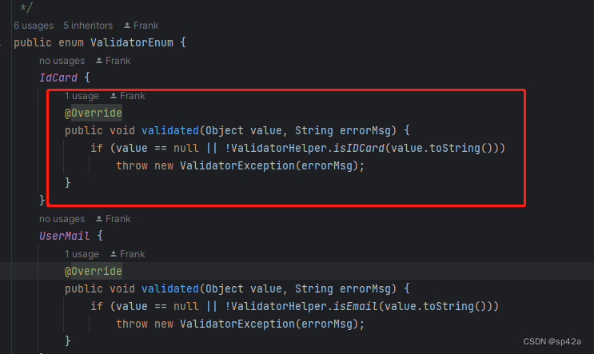

利用 Spring 自带校验器结合 JSR 注解实现轻量级的 Bean 实体校验器。轻捷、简单、很容易上手，也容易扩展。 三个核心类 ValidatorInitializing、ValidatorImpl、ValidatorEnum 去掉注释不超过共200行源码实现 10多MB的 Hibernate Validator 多数功能。
首先要在 YAML 配置文件中增加默认的出错提示信息。
javax-validation:
javax.validation.constraints.AssertTrue.message: 值必须为 true
javax.validation.constraints.AssertFalse.message: 值必须为 false
javax.validation.constraints.DecimalMax.message: 值不能大于 {value}
javax.validation.constraints.DecimalMin.message: 值不能小于 {value}
javax.validation.constraints.Digits.message: 数字值超出范围（应为 [{integer} digits].[{fraction} digits]）
javax.validation.constraints.Email.message: 值必须为有效的电子邮箱地址
javax.validation.constraints.Future.message: 值必须为将来的日期
javax.validation.constraints.FutureOrPresent.message: 值必须为当前或将来的日期
javax.validation.constraints.Max.message: 值不能大于 {value}
javax.validation.constraints.Min.message: 值不能小于 {value}
javax.validation.constraints.Negative.message: 值必须为负数
javax.validation.constraints.NegativeOrZero.message: 值必须为非正数
javax.validation.constraints.NotBlank.message: 值不能为空值或空白字符串
javax.validation.constraints.NotEmpty.message: 值不能为空值、null 或空集合
javax.validation.constraints.NotNull.message: 值不能为空
javax.validation.constraints.Null.message: 值必须为空
javax.validation.constraints.Past.message: 值必须为过去的日期
javax.validation.constraints.PastOrPresent.message: 值必须为当前或过去的日期
javax.validation.constraints.Positive.message: 值必须为正数
javax.validation.constraints.PositiveOrZero.message: 值必须为非负数
javax.validation.constraints.Pattern.message: 值必须与指定正则表达式匹配
javax.validation.constraints.Size.message: 大小必须小于 {max}，大于 {min}
接着注入ValidatorContextAware。这是在 Spring 应用程序上下文初始化完成后设置验证器和参数解析器。这个类的作用是在 Spring 启动时，拦截并修改RequestMappingHandlerAdapter的行为。通过设置自定义的验证器和参数解析器，可以对路径变量进行验证。
@Bean
public ValidatorContextAware initValidatorContextAware() {
return new ValidatorContextAware();
}
首先在参数实体属性上添加对应的注解。
import javax.validation.constraints.NotNull;
@Data
public class JvmInfo implements IBaseModel {
private String name;
@NotNull
private String classPath;
……
}
然后在 controller 里面方法参数上添加@Validated注解，注意是org.springframework.validation.annotation.Validated。
@PostMapping("/test")
public boolean test(@Validated JvmInfo info) {
System.out.println(info);
return true;
}
@RequestMapping("/test/{mobileNo}/{idNo}")
public Map<String, Object> test(@PathVariable @MobileNo String mobileNo, @PathVariable @IdCard String idNo) {
……
}
便可完成对路径参数的校验了。一般来说既然是路径的参数，那么就是必填非空的了。
值得注意的是，这里的@MobileNo、@IdCard都是自定义的注解，而非标准的 JSR 380 所提供的。这里顺便说说自定义的校验注解的写法。
首先定义注解。
import java.lang.annotation.*;
@Documented
@Target({ElementType.METHOD, ElementType.FIELD, ElementType.PARAMETER})
@Retention(RetentionPolicy.RUNTIME)
public @interface IdCard {
String message() default "身份证号格式不正确";
boolean required() default true;
}
然后在枚举类 ValidatorEnum 中增加具体的校验方法，如果不通过就抛出 ValidatorException 异常。
至此就完成了自定义注解的定义。
有关原理的分析，请移步至博客文章： ↗ https://zhangxin.blog.csdn.net/article/details/132255031。